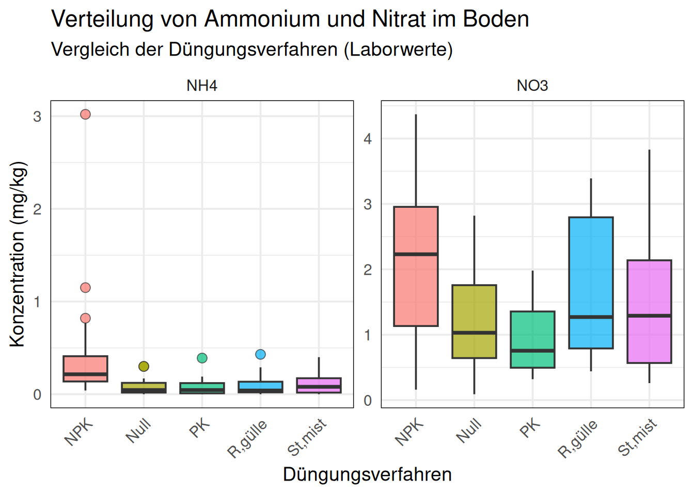
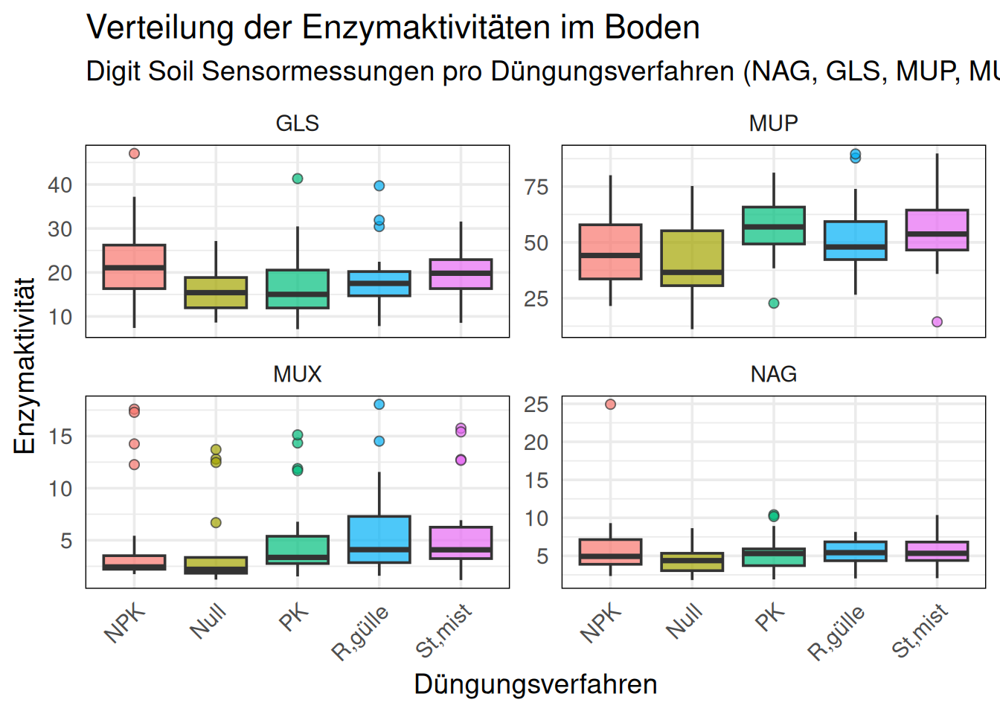
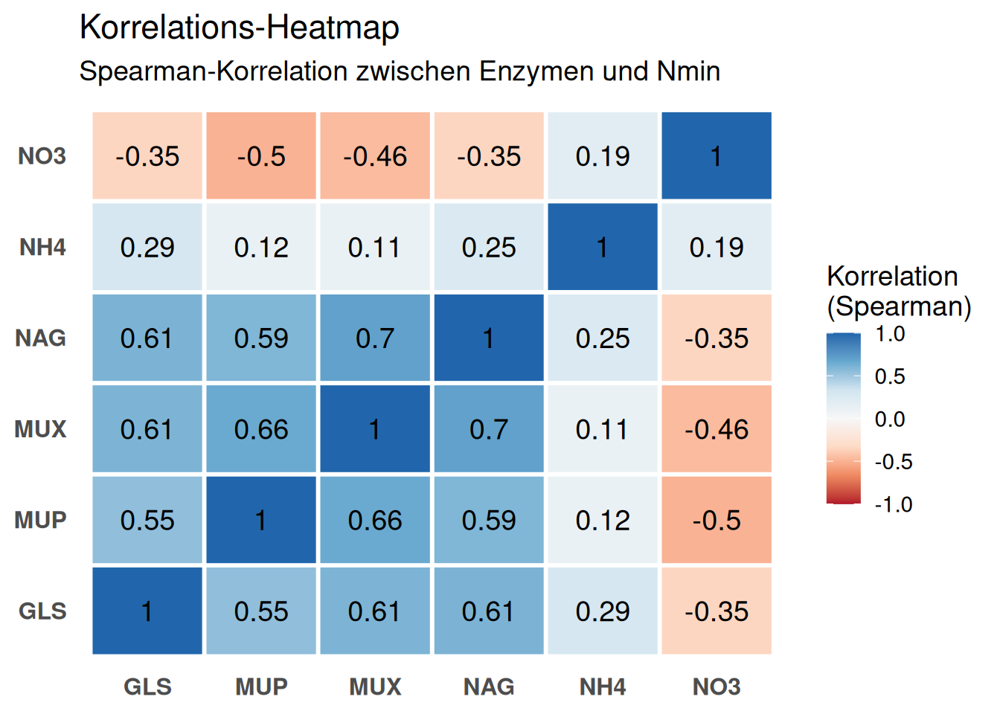
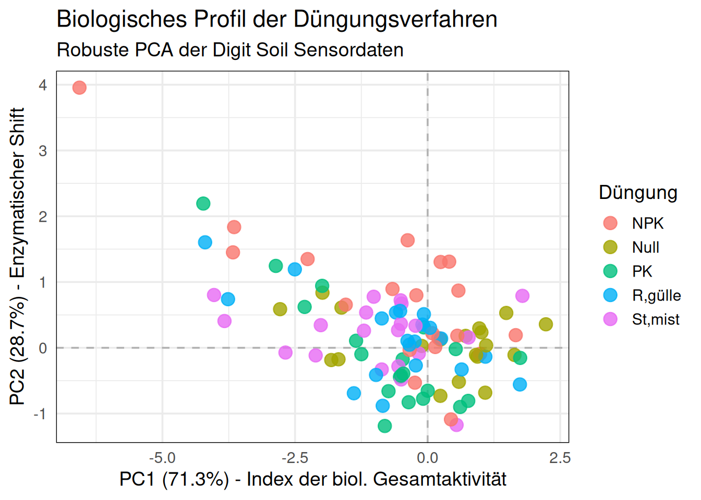
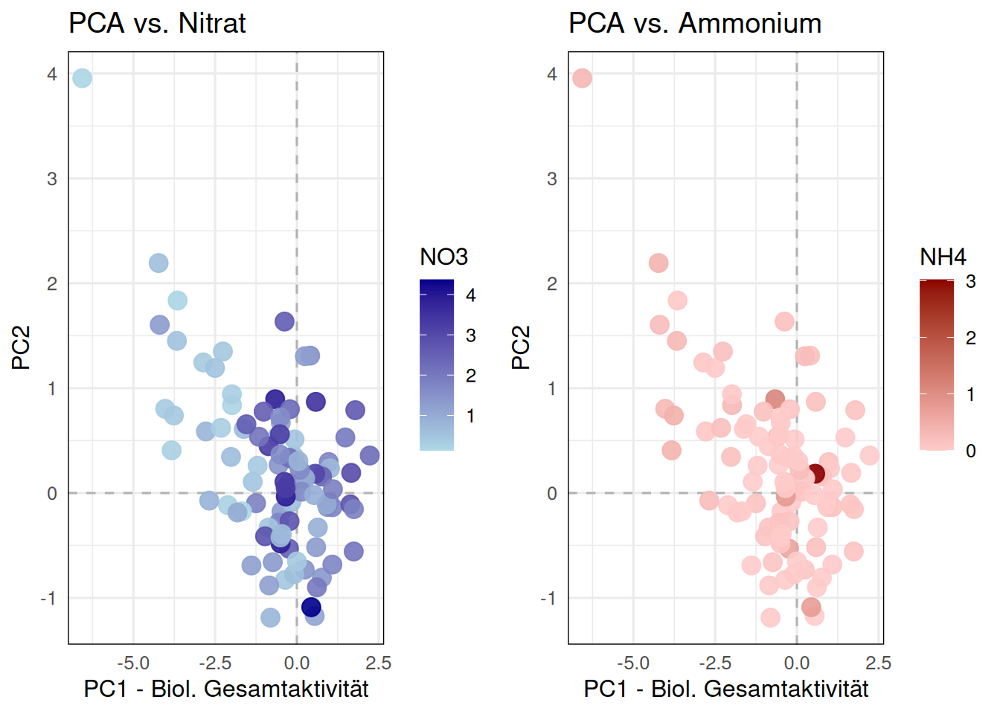
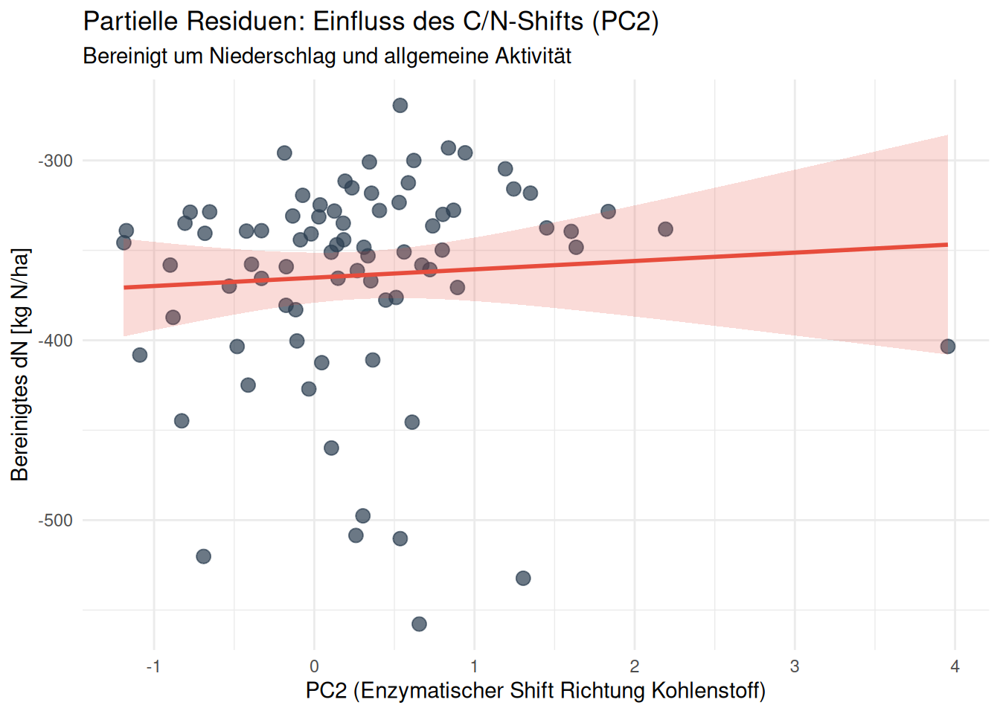
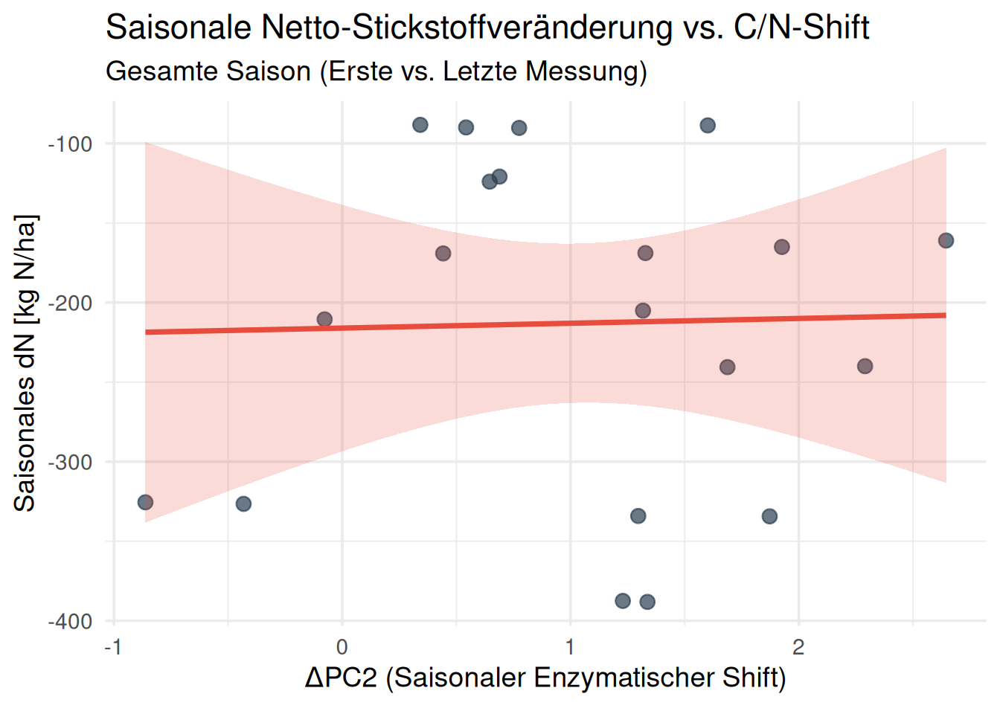

1 Langzeitversuch DEMO
2 1. Hintergrund und Methodik
Der Langzeitversuch DEMO untersucht seit 1989 die Auswirkungen unterschiedlicher organischer und mineralischer Düngungsstrategien auf die Bodenfruchtbarkeit und das Ertragspotenzial.
Die agronomische Fragestellung berücksichtigt, dass die Bestimmung der mineralischen Stickstofffraktionen (Nmin: Ammonium und Nitrat) im Labor eine statische Messung darstellt. In der aktuellen Kampagne (2025) evaluieren wir den Einsatz der Digit Soil Sensoren. Diese messen die enzymatische Aktivität (EEA) direkt im Boden und quantifizieren das Mineralisierungspotenzial der Bodenbiologie.
Die Datenaufbereitung für diese Analyse integriert die räumlichen Replikate (Proben A und B) innerhalb der Parzellen, um die mikrobielle Heterogenität des Bodens abzubilden.
3 2. Explorative Datenanalyse: Nmin pro Verfahren
Der erste analytische Schritt gilt der Etablierung unserer agronomischen Baseline. Die klassische Laboranalyse liefert uns die Konzentrationen von Ammonium (NH4) und Nitrat (NO3).
Wir betrachten die Verteilung dieser Nährstoffe aufgeteilt nach den etablierten Düngungsverfahren. Boxplots sind hierfür das Mittel der Wahl, da sie nicht nur den Median aufzeigen, sondern auch die Streuung und eventuelle Extremwerte (Ausreißer) innerhalb einer Behandlungsgruppe sichtbar machen. Eine hohe Streuung innerhalb eines Verfahrens ist in Feldversuchen oft ein Indikator für räumliche Bodenunterschiede oder ungleichmäßige Mineralisierungsschübe.
4 3. Sensor-Signale: Enzymatische Aktivität (EEA)
Analog zu den Nmin-Werten analysieren wir die Rohsignale der Digit Soil Sensoren. Ursprünglich wurden fünf Enzymaktivitäten erfasst (LAP, NAG, GLS, MUP, MUX). In den Messreihen zeigte sich jedoch, dass das Enzym LAP (Leucin-Aminopeptidase) erhebliche Messausfälle und unvollständige Werte (hoher NA-Anteil) aufweist. Um einen übermässigen Ausschluss valider Probenahmezeitpunkte bei multivariaten Analysen zu vermeiden, konzentriert sich die Auswertung auf die vier verlässlich quantifizierten Enzyme: NAG, GLS, MUP und MUX.
Während Nmin das Produkt der Mineralisierung darstellt, messen diese Enzyme die Raten der mikrobiellen Umsetzungsprozesse. NAG spiegelt den Stickstoffkreislauf wider, während GLS für den Kohlenstoffabbau, MUP für den Phosphorkreislauf und MUX für Hemicellulose steht. Die Fragestellung ist: Weisen die Sensordaten eine messbare Sensitivität gegenüber den Düngungsverfahren auf? Gleiche relative Muster in den Boxplots der Enzyme und Nmin-Werte (z.B. erhöhte Werte bei organischen Verfahren wie “MIST”) dokumentieren die Reaktion der Sensorik auf die Behandlungen.

5 4. Systemische Kopplung: Korrelationsanalyse
Zur Überprüfung der Zusammenhänge der Variablen untereinander verwenden wir die Spearman-Rangkorrelation, da enzymatische Reaktionen Sättigungskurven aufweisen können und nicht zwingend linear verlaufen.
In der folgenden Heatmap werden zwei Muster analysiert:
Multikollinearität der Enzyme: Eine positive Korrelation der Enzyme untereinander wird erwartet, da die Stoffkreisläufe (C, N, P) im Boden gekoppelt ablaufen.
Kopplung an Nmin: Eine Korrelation zwischen dem N-spezifischen Enzym NAG und den Nmin-Laborwerten (NH4/NO3) zeigt an, inwiefern der Sensor das Nachlieferungsvermögen des Bodens abbildet.

6 5. Biologisches Profil und Dimensionsreduktion
Aufgrund der Interkorrelationen zwischen den fünf Enzymen führen wir eine Hauptkomponentenanalyse (rPCA nach Hubert) durch, um die Dimensionalität der Daten zu reduzieren.
Dieser Algorithmus ist unempfindlich gegenüber Ausreißern. Die PCA identifiziert als unüberwachtes Verfahren die stärksten Varianzmuster ohne Vorwissen über die Düngungsverfahren.
Die erste Hauptkomponente (PC1) bündelt die gemeinsame Varianz der Sensoren und quantifiziert die biologische Aktivität. Ein starker Overlap der Ellipsen in der Visualisierung zeigt, dass die räumliche Bodenheterogenität den Treatment-Effekt der Düngung überlagert.


7 6. Mechanistisches N-Balance Modell (Intervall-basiert)
Die explorative Datenanalyse zeigt Varianzen auf Ebene der Replikate. Zur Quantifizierung des biologischen Beitrags zur Stickstoffmineralisierung verwenden wir ein lineares gemischtes Modell (Linear Mixed-Effects Model, LMM) für die Longitudinaldaten.
7.1 6.1 Die Idee: Massenbilanz als Rahmen
Das statistische Modell basiert auf der physikalischen Massenbilanz. Für die Intervalle (\(t_1 \rightarrow t_2\)) wird die Änderung im mineralisierten Stickstoff in kg/ha berechnet (\(dN\)). Hierzu wird die Konzentration (\(mg/kg\)) mit einem Standardfaktor (z.B. 4.5 für 0-30 cm Bodentiefe bei Lagerungsdichte 1.5) in \(kg/ha\) konvertiert.
Der pflanzliche Entzug (Interval_N_Entzug_kg_ha) wird direkt von der \(\Delta N_{min}\) subtrahiert, anstatt als eigener Fixed Effect im Modell geschätzt zu werden. Die resultierende abhängige Variable \(dN\) wird dann durch die Enzym-Hauptkomponenten und den Niederschlag (inkl. quadratischem Term für nicht-lineare Auswaschung) erklärt:
\[dN \sim PC1 + PC2 + Precip + Precip^2\]
7.2 6.2 Variablen und Designmatrix
Das Modell (lmer) verwendet folgende Struktur:
- Abhängige Variable (\(Y\)):
dN(\(kg/ha\)) - Die bereinigte Nettoveränderung des mineralischen Stickstoffs im Boden (\(\Delta N_{min} \times 4.5 - N_{Entzug}\)). - Fixed Effects:
PC1: Index der biologischen Gesamtaktivität.PC2: Enzymatischer Shift (zweite Hauptkomponente).Cum_Precip_mm: Kumulierte Niederschlagssumme zwischen \(t_1\) und \(t_2\) (Open-Meteo API) als Proxy für Auswaschungsverluste.
- Random Effects:
(1 | ParzNrFeld): Random Intercept für jede Parzelle zur Korrektur der individuellen Basislinie.
7.3 6.3 Voraussetzungen und Annahmen
Für die Modellierung gelten folgende Annahmen: 1. Konvertierungsfaktor: Die Umrechnung von \(mg/kg\) in \(kg/ha\) erfolgt mit dem Faktor 4.5 (Annahme: 30 cm Tiefe, \(1.5 \ g/cm^3\)). 2. Ertrags-Baseline (Mais): Für das Jahr 2025 wurde der historische durchschnittliche Gesamtstickstoffentzug (Total_N_Entzug_kg_ha) der jeweiligen Parzelle exklusiv für die Kultur Mais (Kultur == "MA") berechnet. 3. Logistischer Pflanzenentzug (S-Kurve): Der Stickstoffentzug wird nicht linear, sondern mechanistisch über eine logistische Wachstumsfunktion (S-Kurve) basierend auf kumulierten Wachstumsgradtagen (GDD, Basis \(10^\circ C\)) modelliert (Archontoulis and Miguez 2015; Overman and Scholtz III 2002): \[ N_{up}(GDD) = \frac{N_{max}}{1 + \exp(-0.012 \cdot (GDD - 750))} \] Die Parameter sind: * \(N_{max} =\) Historischer Mais-Entzug der Parzelle * Wachstumsrate (\(r\)) \(= 0.012\) * Wendepunkt (\(GDD_{inf}\)) \(= 750 \ GDD\) (entspricht ca. BBCH 51, dem Zeitpunkt der maximalen täglichen N-Aufnahme bei Mais (Bender et al. 2013)). Der berechnete Netto-Entzug im Intervall \(t_1 \rightarrow t_2\) wird dann direkt von \(\Delta N_{min}\) abgezogen. 4. Zeitliche Integration: Die Enzymmessung zum Zeitpunkt \(t_2\) repräsentiert das Intervall \(t_1 \rightarrow t_2\).
7.4 6.4 Modell-Implementierung in R
Linear mixed model fit by REML. t-tests use Satterthwaite's method [
lmerModLmerTest]
Formula: dN ~ PC1 + PC2 + Cum_Precip_mm + I(Cum_Precip_mm^2) + (1 | ParzNrFeld)
Data: df_model
REML criterion at convergence: 855.4
Scaled residuals:
Min 1Q Median 3Q Max
-3.1010 -0.2602 0.2514 0.5629 1.4611
Random effects:
Groups Name Variance Std.Dev.
ParzNrFeld (Intercept) 540.1 23.24
Residual 3121.2 55.87
Number of obs: 79, groups: ParzNrFeld, 10
Fixed effects:
Estimate Std. Error df t value Pr(>|t|)
(Intercept) -3.660e+02 8.489e+01 7.198e+01 -4.312 5.06e-05 ***
PC1 -1.809e+01 7.492e+00 7.344e+01 -2.414 0.018265 *
PC2 8.534e+00 1.141e+01 7.270e+01 0.748 0.456949
Cum_Precip_mm 6.191e+00 1.687e+00 7.119e+01 3.670 0.000465 ***
I(Cum_Precip_mm^2) -2.715e-02 7.442e-03 7.143e+01 -3.648 0.000500 ***
---
Signif. codes: 0 '***' 0.001 '**' 0.01 '*' 0.05 '.' 0.1 ' ' 1
Correlation of Fixed Effects:
(Intr) PC1 PC2 Cm_Pr_
PC1 0.611
PC2 0.335 0.559
Cum_Prcp_mm -0.981 -0.644 -0.310
I(Cm_Pr_^2) 0.960 0.670 0.286 -0.994
fit warnings:
Some predictor variables are on very different scales: consider rescaling.
You may also use (g)lmerControl(autoscale = TRUE) to improve numerical stability.Die PCA-Ladungen definieren die Hauptkomponenten wie folgt: PC1 weist gleichgerichtete, negative Ladungen für NAG, GLS, MUP und MUX auf und quantifiziert die allgemeine enzymatische Aktivität. PC2 weist eine positive Ladung für GLS (Kohlenstoffzyklus) und negative Ladungen für NAG und MUP (Stickstoff- und Phosphorzyklus) auf. PC2 quantifiziert die Verschiebung des enzymatischen Profils zwischen Kohlenstoff- und Nährstoffumsatz.
Daraus wird folgende Hypothese für das N-Balance Modell abgeleitet: Eine erhöhte relative Aktivität kohlenstoffabbauender Enzyme (hoher PC2-Wert) führt durch mikrobielle Immobilisierung zu einer Reduktion des verfügbaren Stickstoffs.
Die Modellergebnisse für die Variable \(dN\) zeigen: PC1 (allgemeine Aktivität) weist keinen signifikanten Effekt auf die Nettoveränderung auf (-18.09 kg N/ha pro Index-Einheit, p = 0.018). PC2 weist einen nicht-signifikanten Koeffizienten auf (8.53 kg N/ha, p = 0.457). Im bereinigten Sommer-Datensatz ist der isolierte enzymatische Effekt linear nicht dominant. Der Niederschlag zeigt einen starken nicht-linearen (quadratischen) Effekt. Die linearen und quadratischen Terme (6.19 bzw. -0.0271) quantifizieren den überproportionalen Auswaschungsverlust bei extremen Niederschlägen.
Die Modellperformance ist hoch: Das Modell erklärt marginal (nur durch Fixed Effects) 19.6% der Varianz (\(R^2_m = 0.196\)) und konditional (inklusive Parzellen-Baselines) 31.4% der Varianz (\(R^2_c = 0.314\)). Der durchschnittliche Vorhersagefehler (RMSE) beträgt 52.19 kg N/ha.
7.5 6.5 Modell-Evaluation und Visualisierung
Um den biologischen Effekt zu isolieren und visuell greifbar zu machen, betrachten wir das Modell in zwei Dimensionen (Partielle Residuen) und in drei Dimensionen (Regressionsebene).
7.5.1 Partielle Residuen: Der isolierte biologische Effekt (PC2)
Da der Niederschlag die Varianz von \(dN\) stark dominiert, berechnen wir die partiellen Residuen. Dabei wird der mathematische Effekt von Niederschlag und allgemeiner Aktivität (PC1) herausgerechnet, um isoliert die Beziehung zwischen dem C/N-Enzymshift (PC2) und der verbleibenden Stickstoffdynamik darzustellen.

7.5.2 3D-Visualisierung der Regressionsebene
Das Modell definiert eine Ebene im dreidimensionalen Raum, aufgespannt durch den biologischen Shift (PC2) und den physikalischen Verlust (Niederschlag). Die interaktive Grafik erlaubt es, die Modellfläche und die Beobachtungen räumlich zu explorieren.
7.6 6.6 Synthese und Interpretation der Felddaten
Die Modellierung der Netto-Stickstoffveränderung (\(dN\)) über die gemessenen Sommerintervalle liefert ein klares phänomenologisches Bild. Im bereinigten Datensatz, in dem die Messintervalle zeitlich korrekt abgeglichen wurden, verliert das enzymatische Profil (die Hauptkomponenten PC1 und PC2) seine statistische Signifikanz als linearer Prädiktor. Stattdessen wird die Varianz der Stickstoffmassenbilanz im Feld signifikant und stark nicht-linear durch den kumulierten Niederschlag dominiert (\(p < 0.001\)).
Die beobachteten Netto-Mineralisierungsraten verhalten sich im Wesentlichen wie ein physikalisches System, in dem moderate Niederschläge vom Boden gepuffert werden, während Extremereignisse zu einem quadratisch ansteigenden Auswaschungsverlust führen. Ein robustes biologisches Signal, welches auf eine enzymatische Steuerung der Netto-Mineralisierung im Makromaßstab hindeutet, lässt sich aus den vorliegenden Daten nicht sicher extrahieren.
Das Ausbleiben messbarer Korrelationen zwischen den in-vitro Enzymaktivitäten und den in-situ Stickstoffflüssen lässt verschiedene Interpretationen zu:
Hypothese 1: Dominanz makroskopischer Flüsse Es ist davon auszugehen, dass die schiere Masse des durch starken Sommerniederschlag verlagerten Stickstoffs (Auswaschung, Denitrifikation) so groß ist, dass sie jeglichen mikrobiologischen Netto-Beitrag überlagert. Das biologische Signal fungiert unter diesen Witterungsbedingungen lediglich als Rauschen innerhalb der dominanten physikalischen Massenbilanz.
Hypothese 2: Diskrepanz zwischen potenzieller und realer Aktivität Die Reaktionsplatten messen die enzymatische Potenzialaktivität unter laboroptimierten Bedingungen (Substratsättigung, optimale Pufferung). Im Feld sind diese Enzyme jedoch Limitationen durch Diffusion, Trockenheit und fehlende Substratverfügbarkeit unterworfen. Das Laborpotenzial lässt sich folglich nicht zwingend als reale Umsetzungsrate in die Feldskala übersetzen.
Hypothese 3: Technische Varianz und Sensorrauschen Letztlich muss in Betracht gezogen werden, dass die in-situ Heterogenität des Bodens und methodische Varianzen des Assays (z.B. Transportbedingungen, Matrixeffekte) eine zu geringe methodische Wiederholbarkeit aufweisen. Ohne hinreichende Konsistenz misst die Methode primär stochastisches Rauschen, welches prinzipbedingt keine Korrelation zu den realen Nährstoffflüssen aufbauen kann.
8 7. Saisonaler Ansatz: Erste vs. Letzte Messung
Als alternativen Ansatz zur Intervall-basierten Modellierung betrachten wir nun ausschließlich die Nettoveränderung über die gesamte Vegetationsperiode. Hierbei verwenden wir lediglich die erste und die letzte Messung jeder Parzelle.
Die Fragestellung lautet: Kann die saisonale Veränderung der Enzymaktivität (\(\\Delta\)PC1 und \(\\Delta\)PC2) die saisonale Stickstoff-Nettoveränderung (\(dN\)) erklären, wenn wir die Varianz durch Witterung ausschließen? Da der Niederschlag über die gesamte Saison für alle Parzellen im Versuch identisch ist, fungiert er im Querschnitt dieses Modells lediglich als Konstante und fällt somit als erklärende Variable weg. Die Enzymdynamik rückt dadurch völlig in den Fokus.
Linear mixed model fit by REML. t-tests use Satterthwaite's method [
lmerModLmerTest]
Formula: dN_season ~ Delta_PC1 + Delta_PC2 + (1 | ParzNrFeld)
Data: df_season
REML criterion at convergence: 151.8
Scaled residuals:
Min 1Q Median 3Q Max
-1.05941 -0.62364 0.00808 0.61445 1.07139
Random effects:
Groups Name Variance Std.Dev.
ParzNrFeld (Intercept) 11336.732 106.474
Residual 2.212 1.487
Number of obs: 20, groups: ParzNrFeld, 10
Fixed effects:
Estimate Std. Error df t value Pr(>|t|)
(Intercept) -215.65481 33.70399 9.03449 -6.398 0.000123 ***
Delta_PC1 -0.08026 0.31923 8.00313 -0.251 0.807817
Delta_PC2 2.39462 0.95390 8.00955 2.510 0.036318 *
---
Signif. codes: 0 '***' 0.001 '**' 0.01 '*' 0.05 '.' 0.1 ' ' 1
Correlation of Fixed Effects:
(Intr) Dl_PC1
Delta_PC1 0.033
Delta_PC2 -0.030 -0.030Wie die Modellzusammenfassung zeigt, bleiben auch über die gesamte Saison hinweg die Veränderungen im Enzymprofil (\(\\Delta\)PC1 und \(\\Delta\)PC2) als Prädiktoren für die Stickstoffbilanz statistisch nicht signifikant (\(p > 0.05\)).
Wir können dies visuell überprüfen. Da der Niederschlag in dieser Betrachtung konstant ist, entspricht die saisonale Netto-Stickstoffveränderung (\(dN\)) direkt dem (unbereinigten) partiellen Residuum in Bezug auf den C/N-Shift. Wir tragen dieses gegen \(\\Delta\)PC2 auf:

Dies bestätigt unsere vorherigen Hypothesen: Auch bei Betrachtung des größtmöglichen Intervalls (gesamte Saison) ist das biologische Signal der Potenzial-Enzymmessung (Digit Soil) nicht ausreichend konsistent oder nicht dominant genug, um die verbleibende Varianz in der in-situ Stickstoffmassenbilanz zwischen den Parzellen signifikant zu erklären.
Archontoulis, Sotirios V., and Fernando E. Miguez. 2015. “Nonlinear Regression Models and Applications in Agricultural Research.” Agronomy Journal 107 (2): 786–98. https://doi.org/10.2134/agronj2012.0506.
Bender, Ross R., Jason W. Haegele, Matias L. Ruffo, and Fred E. Below. 2013. “Nutrient Uptake, Partitioning, and Remobilization in Modern, Transgenic Insect-Protected Maize Hybrids.” Agronomy Journal 105 (1): 161–70. https://doi.org/10.2134/agronj2012.0352.
Overman, Allen R., and Richard V. Scholtz III. 2002. Mathematical Models of Crop Growth and Yield. CRC Press.